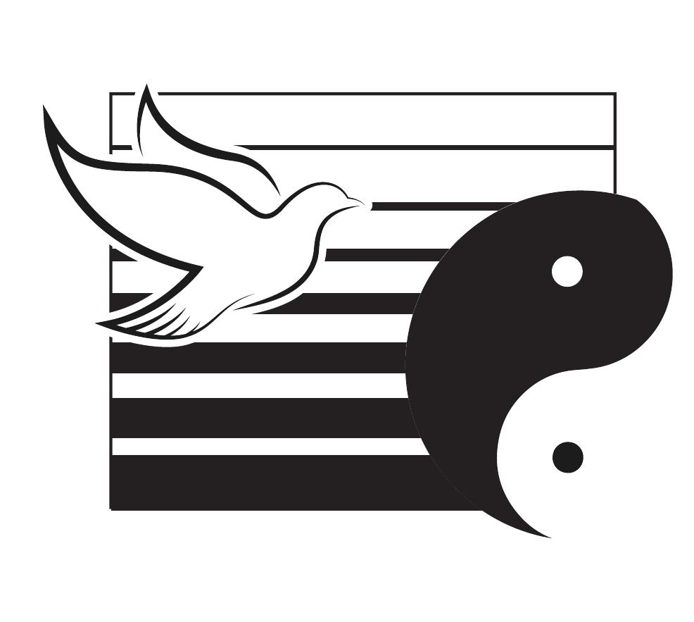
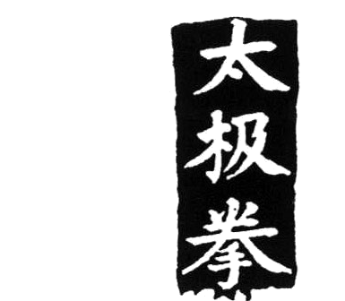

Art traditionnel. Art du mouvement. Art martial défensif.
École de Tai Chi Chuan et de Qi Gong à Rennes, portée par l'association Yin-Yang et enseignée par Patrick Loisel depuis 1981.

Le Tai Chi Chuan
Le Tai Chi Chuan est un art étonnant et merveilleux. On peut pratiquer cet art martial seul ou à deux, y trouver l'unité, la continuité, la finesse, l'énergie et beaucoup d'autres trésors…
Le Tai Chi est une discipline formatrice et structurante. Il se base sur les lois physiques de l'univers, d'attraction de répulsion, de rapport de force, de vide et de plein.
Il est relié et nous relie aux temps ancestraux, il est le fruit d'une évolution pensée et adaptée au fil des générations. Le Tai Chi se pratique à main nue mais il peut être prolongé par le bâton, le sabre ou l'épée. Sa pratique en groupe ou en solo génère une qualité de silence et de communication avec soi et autrui.
Que le geste soit rond ou discontinu, le pas assuré ou l'équilibre incertain, il est. Et c'est dans l'intention de la pratique qu'il prend toute sa signification, se bonifie et révèle toute sa richesse.
Réussir à harmoniser, à arrondir sa forme initiale est déjà un bon résultat qui demande aux pratiquants de Tai Chi régularité et ténacité pour y parvenir. Pas besoin d'être souple pour pratiquer le Tai Chi : on s'accepte comme tel, avec nos tensions, nos décalages, nos dispersions.
Par le travail sur l'axe et la relaxation, le Tai Chi gomme petit à petit bien des gestes et des tensions superflues qui surchargent notre quotidien et la qualité relationnelle.
Encore appelé mouvement des trois mille remèdes, le Tai Chi nous apporte simplicité et cohérence. Art du mouvement et de bien-être, il restera, au-delà des modes, comme une excellente discipline tournée vers l'essentiel.
L'association Yin-Yang
L'association Yin-Yang est à l'origine du Centre Rennais de Tai Chi Chuan. Elle a pour but de favoriser et développer la pratique du Tai Chi Chuan ainsi que la recherche de moyens permettant l'accès à l'équilibre de l'être, en proposant :
- un enseignement puisé à la source de la tradition,
- des cours dans différentes salles rennaises,
- des cours dans différentes villes avec les associations affiliées à Fougères, Vitré, Laval, Angers, Le Mans, Paris, Avranches, Vannes, Auray, Grenoble, etc.,
- la pratique de disciplines complémentaires : Qi Gong, méditation, tir à l'arc (oriental),
- une formation d'enseignant,
- une formation en énergétique traditionnelle chinoise,
- des stages de 2 à 5 jours dans des cadres naturels (Saint-Malo, Belle-Île, parc des Bauges…).
L'enseignement
Patrick Loisel dirige l'enseignement au Centre Rennais de Tai Chi Chuan. Il est assisté par les élèves en formation d'enseignant.
Patrick Loisel pratique le Yoga dès l'âge de 13 ans et débute le Tai Chi Chuan et le Qi Gong en 1981. Son chemin le conduit à travailler avec le grand Maître Gin Soon Chu, tête de file de l'école Yang.
Il enrichit sa pratique personnelle par l'étude de différentes méthodes de rééquilibration et d'harmonisation, dont l'énergétique traditionnelle chinoise. Il intervient également en séances individuelles, en assurant un suivi régulier.
Patrick Loisel forme des enseignants à cette discipline ainsi que des étudiants en thérapie manuelle.

Planning des cours
| Lundi | Mardi | Mercredi | Jeudi | Vendredi | |
|---|---|---|---|---|---|
| 10h | Centre | Centre | Centre | ||
| 11h | Centre | Centre | |||
| 12h | |||||
| 13h | Centre | Centre | Centre | ||
| 14h | |||||
| 15h | |||||
| 16h | |||||
| 17h | |||||
| 18h | Centre | Centre | |||
| 19h | Centre | Gymnase | Centre | Cité Int. | Centre |
| 20h | Gymnase | Centre | |||
| 21h | Gymnase |
Les cours se déroulent du 21 septembre au 15 juin, avec interruption pendant les vacances scolaires. Il est possible de débuter en cours d'année et d'assister au premier cours sans engagement.
Inscriptions
+ 25€ d'adhésion à l'association Yin-Yang. Réduction étudiant, chômeur et carte Sortir. Le règlement peut se faire en 3 fois.
Les inscriptions s'effectuent sur les lieux des cours, dans la limite des places disponibles.
Où et quand ?
Centre Rennais de Tai Chi Chuan
4 bis, avenue Louis Barthou
Métro Gare
Gymnase des Gantelles
École des Gantelles
Métro Les Gayeulles — Ligne B
Cité internationale
11 boulevard de la Liberté
Dernier étage